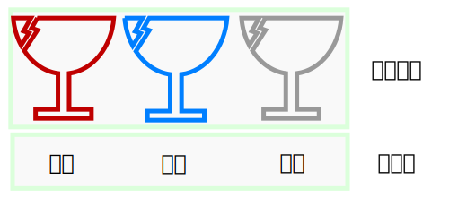

入门¶ Lua简介¶ Lua可以说是目前嵌入式方案中，资源占用 最小 、运行效率 最高 、语法 最简洁 的一门脚本语言。 对于编程小白来说，它适合作为你的编程入门语言，因为语法简单。对于会c语言的老手来说，它与c可以完美契合，再加上LuatOS本身就是开源，你可以轻松地使用c为其添加一套c库接口，享受它的高效。 变量¶ 变量名¶ 什么是 变量 ？变量就是某种数据，而每一个装了某种数据的容器，都要拥有者自己的容器名字，这个名字被我们称之为 变量名。 也就是说，每个 变量名 都，可以直接代表某一个 变量 。 酒的名字与实际杯子里的液体对应¶ 像上图，我们可以直接用酒的名字，来称呼一杯酒；而直接称呼 变量名 ，也代表着使用某个 变量 。 number类型¶ 变量是有类型的，我们这里先只教一种类型： 数值型（number） 。 顾名思义，数值型，存储的就是数字。 比如下面的这些数据，都是数值型： 1 123 234 1.234 10000000 睡了，待续